Kies je favoriet per shot; laat me weten welke variant ik in het storyboard zet. (Nu ingezet: first-person B, opening B, draak A, strijd A.)
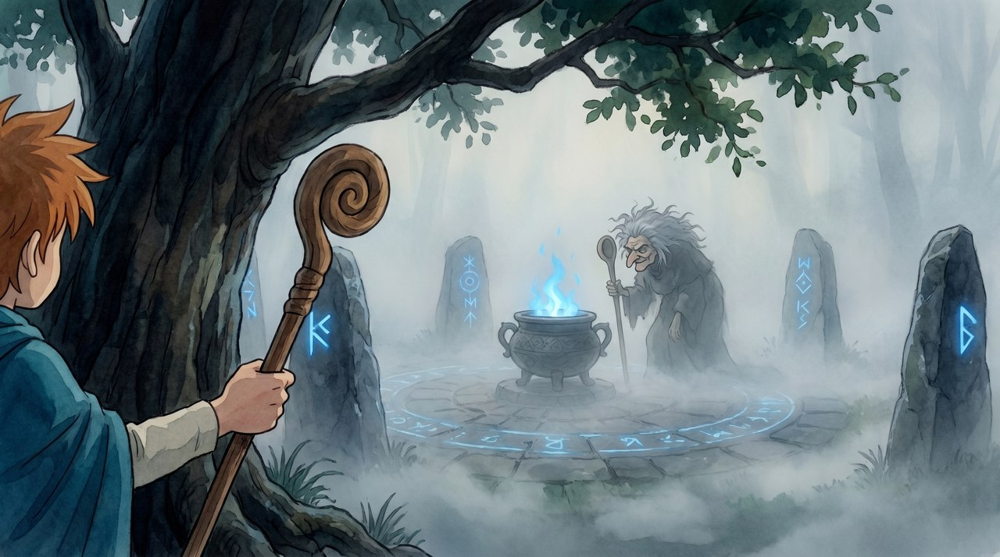
Finn kijkt langs de boom (je ziet zijn kop en hand); heks achter de ketel, leunend op haar pollepel. Blauwe runen + ketelvuur.
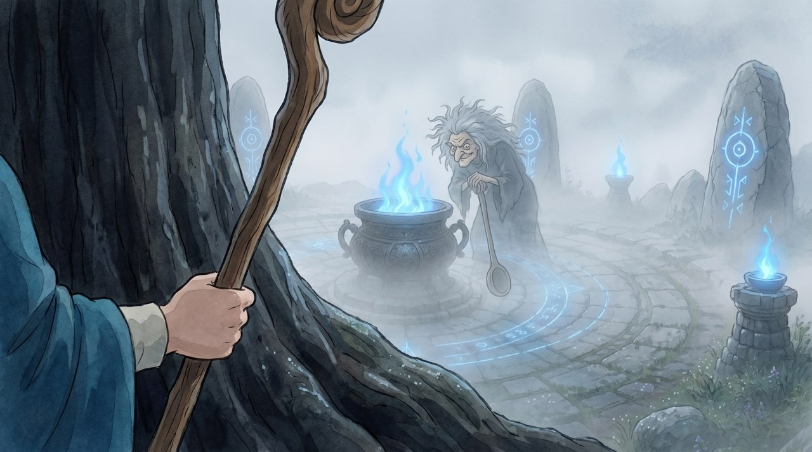
Pure POV: alleen Finns blote hand om de staf, grote boomstam ervoor. De vage heks staat achter de ketel en leunt op haar grote pollepel. Veel mist + blauwe lichtjes.
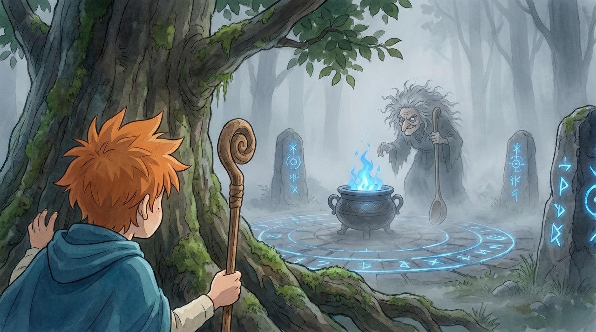
Je ziet Finn duidelijk wég-duiken achter de mossige boom (hand op de stam); heks achter de ketel met haar pollepel. Sfeervol.
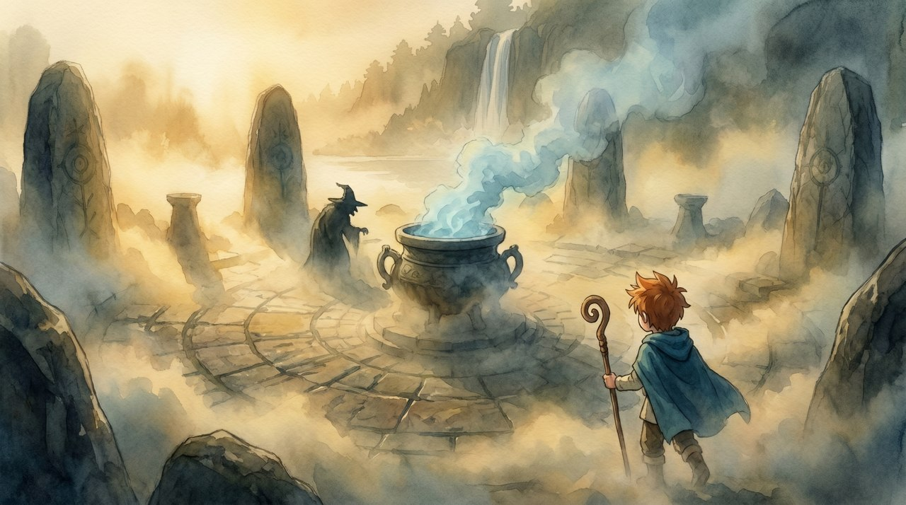
Warme, sepia-mist; Finn rechtsonder, de gedaante links van de ketel. Heel dromerig/vaag.
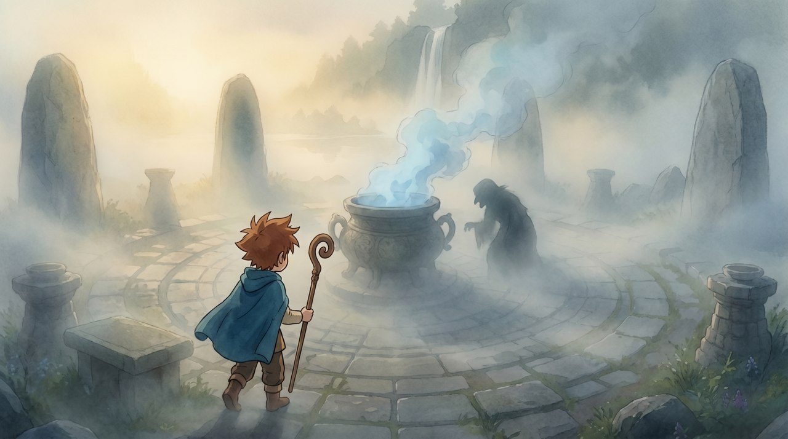
Strakke compositie: Finn loopt linksonder binnen, de donkere gedaante duidelijk rechts van de ketel. Mysterieus en helder.
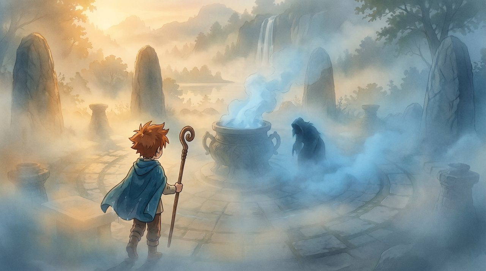
Koelere blauwe mist (past bij de blauwe ketel); gehurkte gedaante rechts, hele cirkel zichtbaar.
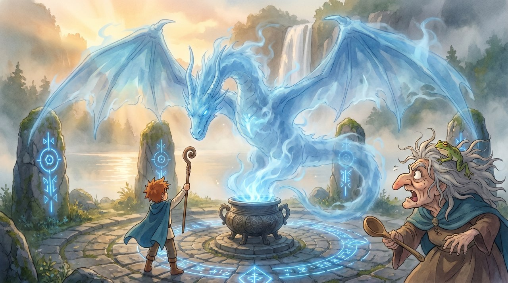
Reusachtige draak met wijd gespreide vleugels, waterval zichtbaar dóór de vleugels. Heks rechts deinst terug.
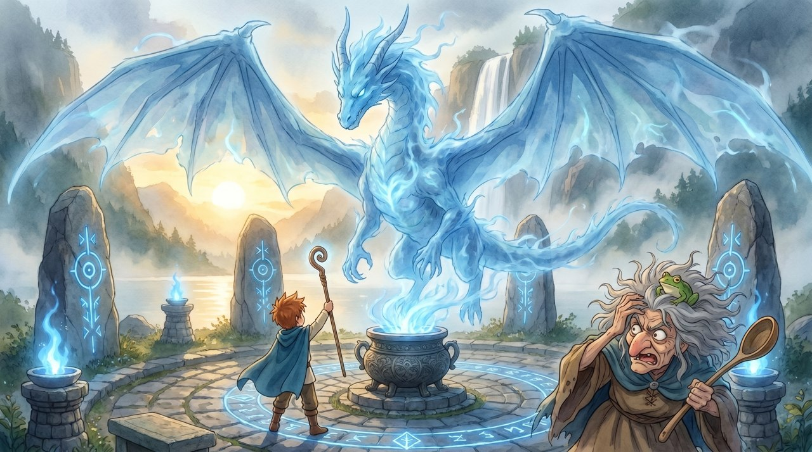
Nog ijler/spookachtiger, torenhoog boven de cirkel. Heks grijpt naar haar hoofd van schrik.
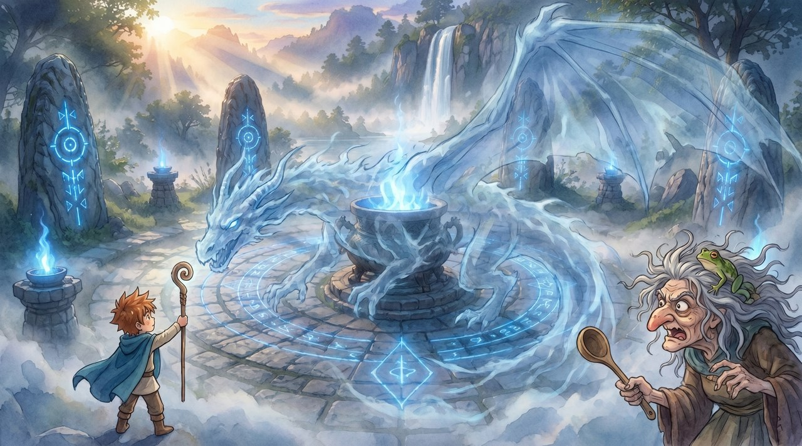
Draak kronkelt om de ketel heen, slangachtig en transparant; bredere kijk op de cirkel.
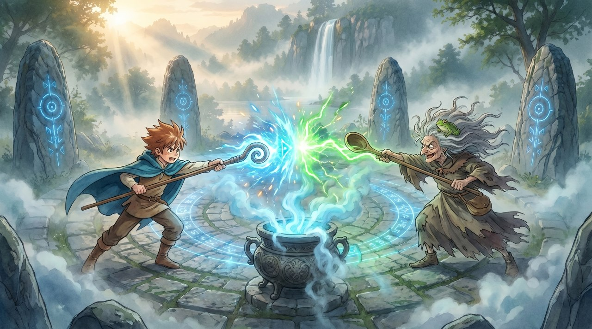
Blauwe en groene magie botsen strak in het midden boven de ketel; runenstenen duidelijk in beeld.
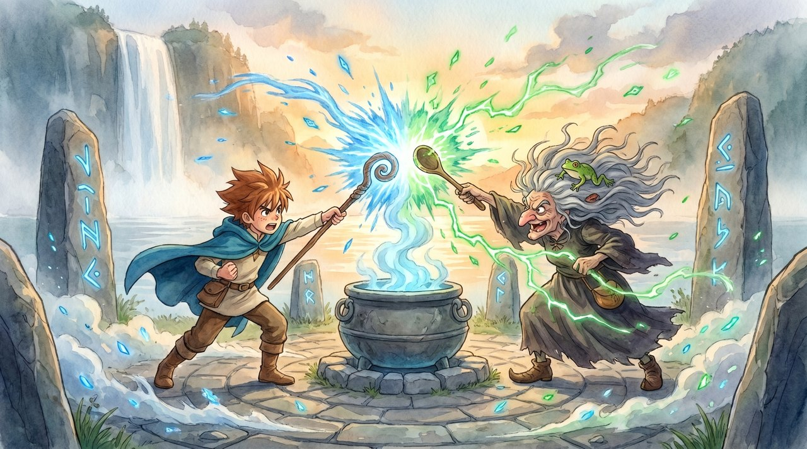
Dynamischer, grotere stralen blauw/groen, grote stenen aan weerszijden, waterval erachter.
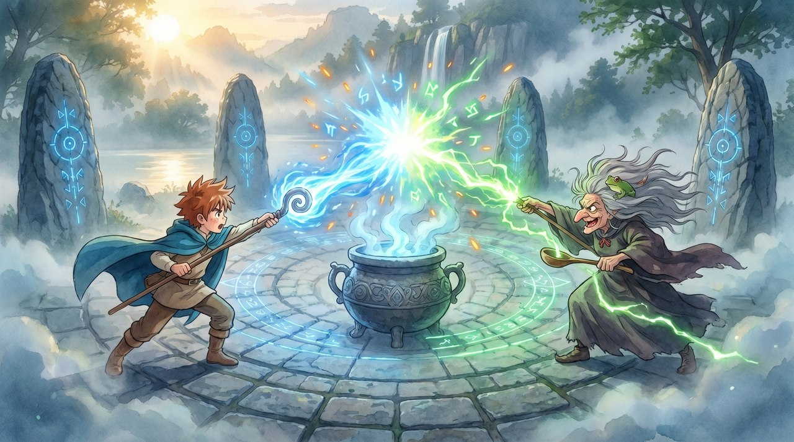
Wijdere compositie, felle blauw-groene botsing, runencirkel en stenen volledig zichtbaar.
noindex · interne keuzepagina